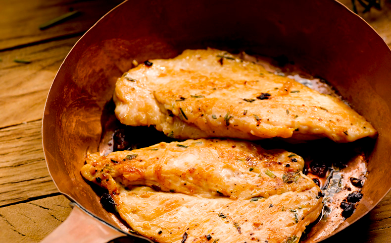

Chicken Breast

The best animal protein avaiable for you!
Chicken Breast is carbo free, low fat and high protein meat you MUST include in your diet.
Ingredients:
1kg of chicken breast;
4 cloves of garlic;
2 soup spoons of olive oil;
1 lemon;
1 teaspoon of salt.
Steps
Cut the chicken into smaller pieces.
Put the chicken in a bowl, squeeze the lemon, mix them and then wash it.
With a fork, pierce the chicken. Doing so will make it easier for the spices enter the chicken.
In a bowl, mix the chicken with the olive oil and the crushed garlic. You're free to add othe condiments, like paprika.
Leave it in an air fryer for 12 minutes at 200°C. After the *Plim* sound, your meal is done!